Su accesoCorreo y contraseña de prueba, enviados en el mensaje que acompaña esta guía.
Tiempo de revisiónUnos 15 minutos. Funciona en computador y en celular.
Antes de empezar
Todo es de ejemplo. Los nombres de los socios, las fotografías, el teléfono, la dirección, el número de WhatsApp, las especialidades y las consultas marcadas «Demo» son ficticios. «NEXO» es un nombre provisional.
Por favor no ingrese datos reales de personas ni de casos. Para probar, use nombres y correos inventados.
Lo que usted haga en la demostración sí se guarda (así comprueba que funciona de verdad) y después lo podemos borrar.
1. ¿Qué es esta demostración?
Es una propuesta completa de presencia digital para un estudio jurídico de tres socios, con dos partes que trabajan juntas:
El sitio web, que ven las personas que buscan orientación: presenta al estudio, sus áreas y su equipo, y permite pedir una primera consulta. Está en español e inglés y cuenta con un panel de accesibilidad.
El panel de los socios, privado, donde llegan las consultas en tiempo real, se reparten entre los tres socios y se les hace seguimiento. También permite cambiar los textos del sitio sin ayuda técnica.
2. Recorrido por el sitio web
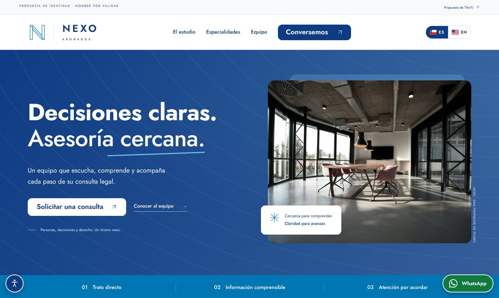
Portada. Arriba a la derecha de la cabecera, los botones ES / EN cambian el idioma; el botón circular de abajo a la izquierda abre el panel de accesibilidad; el botón verde de abajo a la derecha abre WhatsApp (con un número de ejemplo).
Qué probar
Especialidades. Pulse cada fila (Derecho civil, laboral, empresas) para ver su detalle.
Equipo. Pulse una fotografía o «Conocer su perfil». Son perfiles ilustrativos con nombres inventados.
Idioma y accesibilidad. Cambie a inglés. Abra el botón de accesibilidad y pruebe «Alto contraste» o «Aumentar texto».
Pida una consulta. Baje hasta «Hablemos de su próximo paso», complete el formulario con datos de ejemplo y envíelo. Verá un código de seguimiento; la solicitud llega al panel en segundos.
Privacidad y cookies. En el pie de la página están la política de privacidad y la de cookies (borradores que un abogado debe revisar).
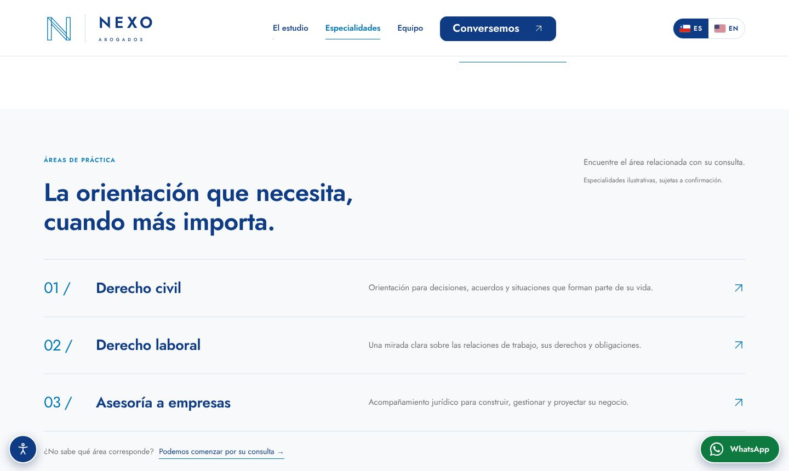
Especialidades: tres filas, cada una abre su detalle.
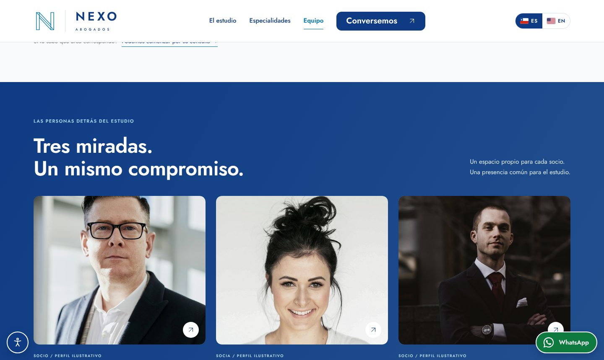
Equipo: un espacio igual para cada socio.
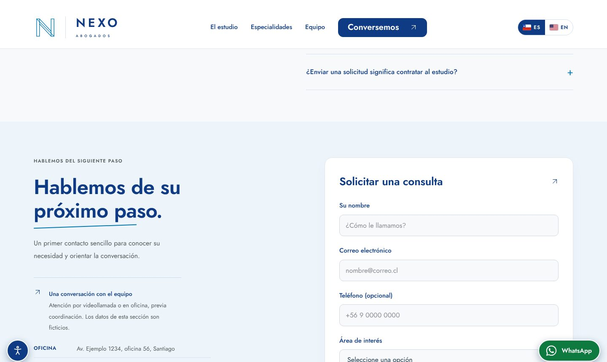
Formulario de contacto: nombre, correo, teléfono (opcional), área y aceptación de la política de privacidad.
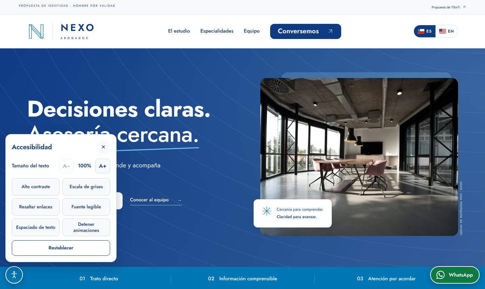
Panel de accesibilidad: tamaño de texto, contraste, escala de grises, enlaces resaltados, fuente legible y más.
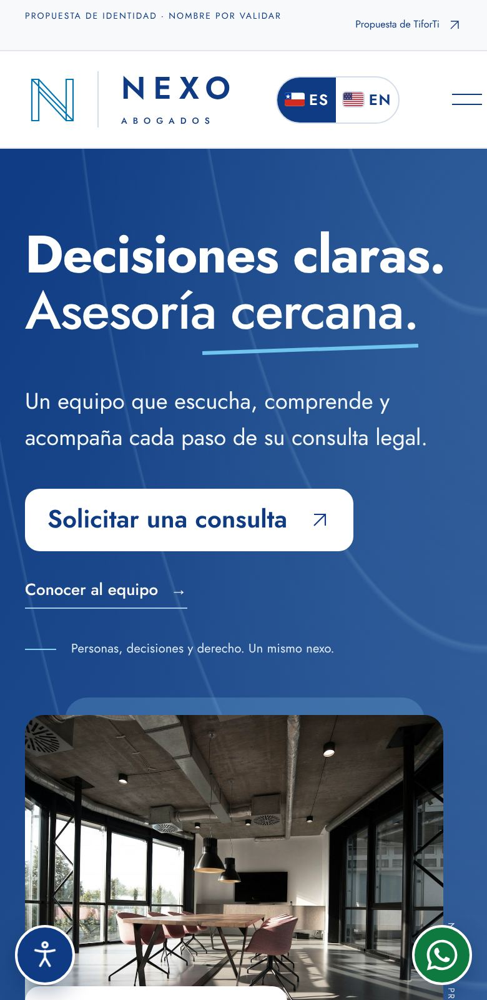
En el celular el sitio se adapta por completo.
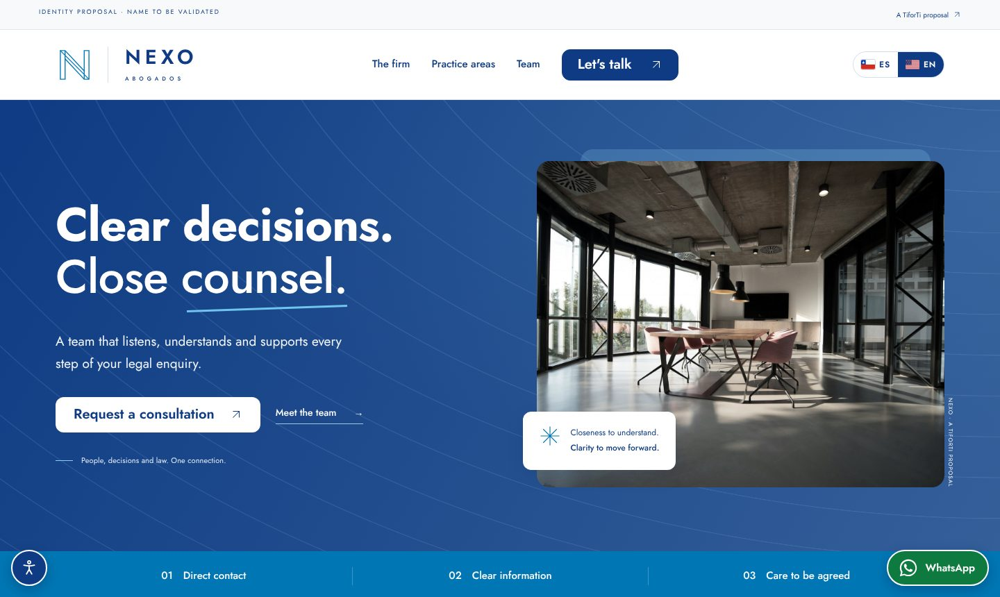
La misma página en inglés, para llegar a más clientes.
Escriba el correo y la contraseña de prueba que le enviamos y pulse «Entrar al panel».
Le recomendamos cambiar la contraseña en Ajustes → Cambiar mi contraseña (mínimo 12 caracteres; una frase larga es lo mejor).
Al terminar, pulse «Salir» (en el celular: Más → Salir).
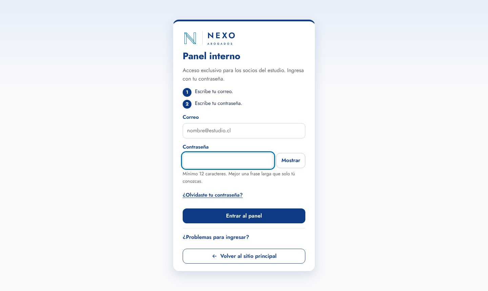
Pantalla de ingreso. «Mostrar» deja ver la contraseña mientras la escribe.
Cuidados de acceso
La sesión se cierra sola tras 15 minutos sin actividad y al cerrar la pestaña.
Tras varios intentos fallidos el acceso se bloquea unos segundos.
Solo las personas dadas de alta como socios pueden ver las consultas.
¿Problemas para ingresar?
Revise que el correo esté bien escrito y que no tenga activadas las mayúsculas. Si no logra entrar, avísenos y restablecemos su acceso.
4. Qué puede hacer en el panel
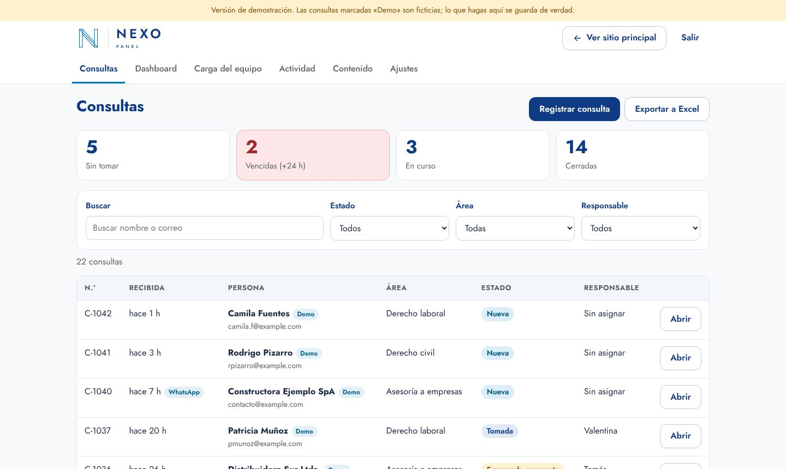
Consultas. Cada solicitud aparece sola (sin recargar). Las que llevan la etiqueta «Demo» son de ejemplo. Los cuadros de arriba filtran con un clic («Sin tomar», «Vencidas», «En curso», «Cerradas»).
Función
Cómo se usa
Tomar una consulta
Abra una consulta y pulse «Tomar esta consulta». Queda a su nombre y los otros socios la ven como tomada. Si dos socios la toman a la vez, solo uno lo logra.
Estado y plazo
Cambie entre «En curso», «Esperando respuesta» y «Cerrar consulta». Cada consulta nueva muestra cuánto plazo queda (24 horas por defecto).
Notas e historial
Pestaña «Notas» para comentarios internos. El «Historial» registra quién hizo qué y cuándo; no se puede borrar.
Repartir la carga
Pestaña «Reasignar»: elija al socio y escriba el motivo. «Carga del equipo» muestra cuántas lleva cada uno.
Registrar a mano
Botón «Registrar consulta»: para lo que llega por WhatsApp, teléfono o en persona.
Exportar a Excel
Descarga la lista (con los filtros aplicados) en filas y columnas ordenadas.
Dashboard
Gráficos de barras y de pastel: carga por socio, consultas por día, por área, por estado y por canal.
Actividad
Registro de lo que hacen los socios en el panel.
Contenido
Editor de los textos del sitio (ver más abajo).
Ajustes
Plazo para tomar consultas, cambio de contraseña y borrado de las consultas «Demo».
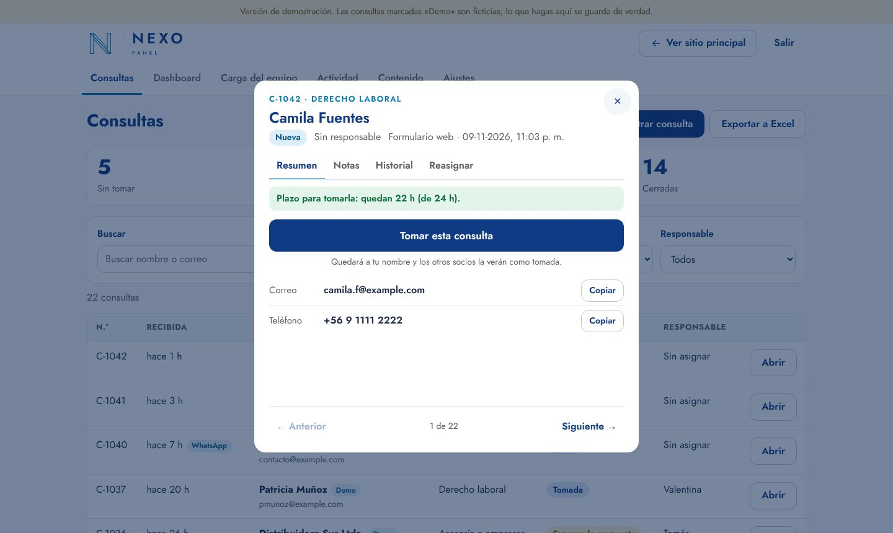
Ficha de una consulta: plazo, contacto con botón «Copiar» y las pestañas Resumen, Notas, Historial y Reasignar. «Anterior / Siguiente» recorre las demás.
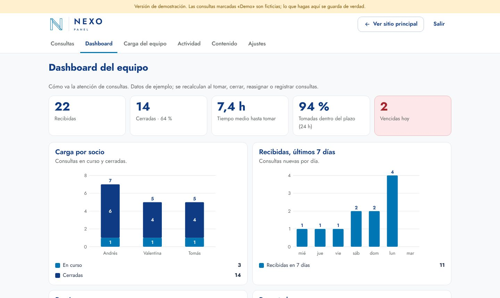
Dashboard del equipo con indicadores y gráficos.
5. Cambiar los textos del sitio sin ayuda técnica
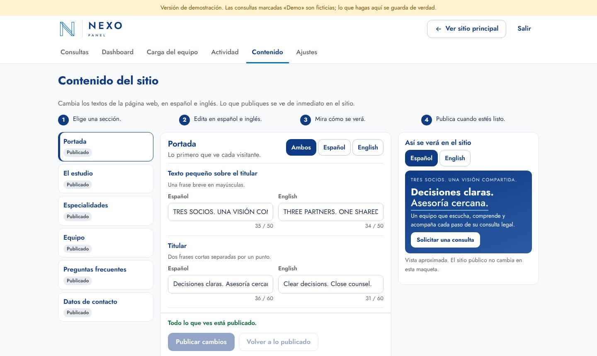
En «Contenido» se elige una sección a la izquierda, se editan los textos en español e inglés (centro) y a la derecha se ve cómo quedará.
Elija una sección (Portada, El estudio, Especialidades, Equipo, Preguntas frecuentes o Datos de contacto).
Edite el texto. Se guarda solo como borrador; el sitio no cambia todavía.
Pulse «Publicar cambios» y confirme. Verá un resumen de lo que cambiará. Recargue el sitio y ya aparece.
Si se equivoca, «Volver a lo publicado» descarta el borrador y «Versiones publicadas» permite restaurar una anterior.
6. En el celular
El panel está pensado para usarse con una sola mano: barra inferior de navegación, tarjetas compactas, botón «Tomar» en cada consulta nueva (con «Deshacer») y la ficha a pantalla completa.
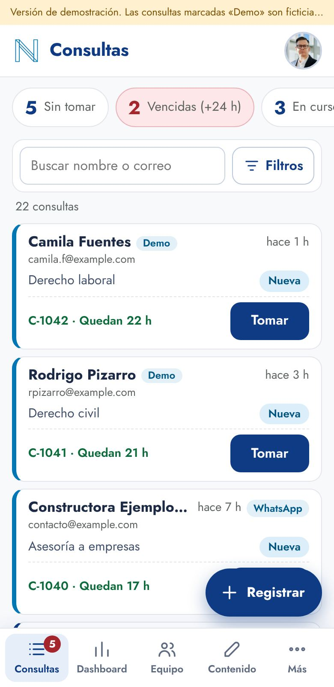
Consultas, con filtros rápidos y «Tomar» con un toque.
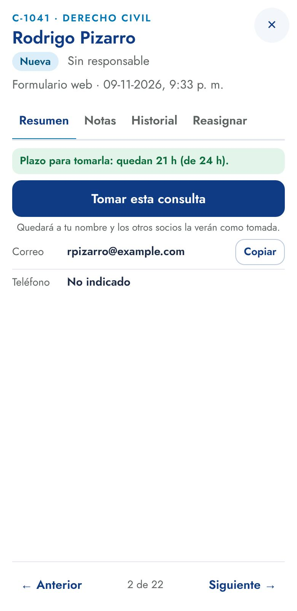
Ficha a pantalla completa.
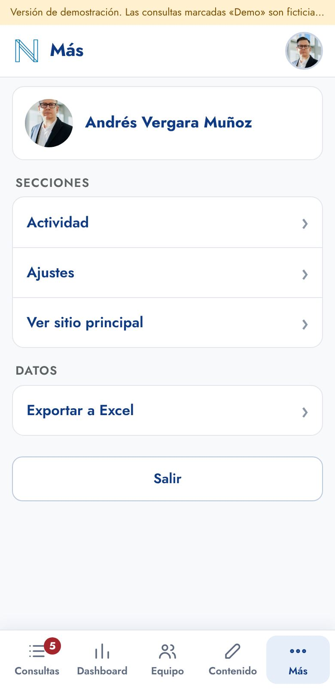
«Más»: actividad, ajustes, Excel y salir.
7. Prueba sugerida de 10 minutos
Enviar una consulta desde el formulario del sitio, con datos de ejemplo.
Entrar al panel y ver que ya apareció (arriba, como «Nueva»).
Tomarla, cambiar su estado y escribir una nota.
Reasignarla a otro socio indicando un motivo.
Registrar a mano una consulta de «WhatsApp».
Cambiar un título en «Contenido», publicarlo y verlo en el sitio.
Exportar la lista a Excel.
Mirar el Dashboard.
Repetir una parte desde el celular.
Cambiar su contraseña y salir.
8. Seguridad y privacidad, en simple
Quién ve las consultas: solo los socios con cuenta personal. Quien visita el sitio puede enviar una solicitud, pero no puede ver, modificar ni borrar ninguna.
Dónde se guardan: en servidores seguros en la nube, con la región de Chile como ubicación principal.
Trazabilidad: el historial y las notas no se pueden borrar; cada acción queda registrada.
Sin rastreo: el sitio no usa publicidad ni herramientas de analítica de terceros ni cookies; solo recuerda en su navegador el idioma y los ajustes de accesibilidad.
Los textos de privacidad son un borrador que debe revisar un abogado antes de recibir consultas reales.
9. Qué es demostración y qué falta para la versión final
Hoy, en la demostración
En la versión final
Nombres, fotos, perfiles y especialidades de ejemplo
Información y fotografías reales, aprobadas por cada socio
Teléfono, dirección, correo y WhatsApp de ejemplo
Datos reales del estudio
Las consultas llegan al panel y se ven en pantalla
Además, aviso por correo a una casilla compartida y a cada socio, con recordatorio si pasa el plazo
Ingreso con correo y contraseña
Se puede sumar un segundo factor de verificación
Dirección web de prueba
Dominio propio del estudio
Textos legales en borrador; plazo de conservación de datos por definir
Textos revisados por un abogado y política de conservación definida
Protección básica contra envíos automáticos
Protección reforzada contra envíos automáticos
10. Qué nos ayuda que usted revise
¿El nombre, el tono y la imagen transmiten lo que el estudio quiere?
¿Las tres especialidades son las correctas? ¿Falta alguna?
¿Cómo quieren presentar a cada socio (formación, idiomas, modalidad de atención)?
¿Cuánto debería tardar el estudio en responder una consulta nueva? (hoy: 24 horas)
¿Cómo se reparten las consultas entre los socios? ¿Cada uno elige, o por especialidad?
¿La primera consulta es gratuita? ¿De cuánto tiempo? ¿Con qué condiciones?
¿Qué datos conviene pedir en el formulario? ¿Falta o sobra alguno?
¿Quieren recibir los avisos por correo? ¿A qué casilla y a qué correos de socios?
¿Cómo atienden hoy el WhatsApp? ¿Quién respondería?
¿Cuánto tiempo deben conservarse los datos de quienes consultan?
¿Qué mejoraría del panel para el trabajo diario?
11. Preguntas frecuentes
¿Puedo estropear algo? No. La demostración se puede restablecer en cualquier momento.
¿Mis pruebas quedan guardadas? Sí. Las eliminamos después de su revisión.
¿Puedo entrar desde el celular? Sí, el sitio y el panel están diseñados para teléfono.
¿Los otros socios pueden ver lo que hago? Sí: las consultas y su historial son compartidos entre los tres socios, y cada acción queda con el nombre de quien la hizo.
Me equivoqué de contraseña varias veces. Espere unos segundos y vuelva a intentarlo; si no resulta, avísenos.